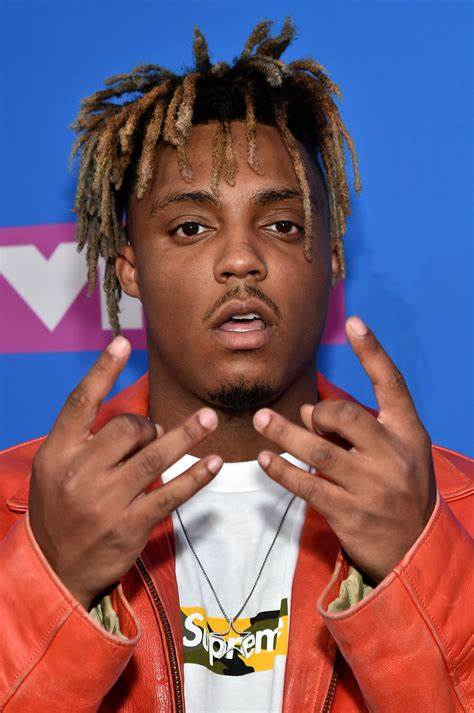
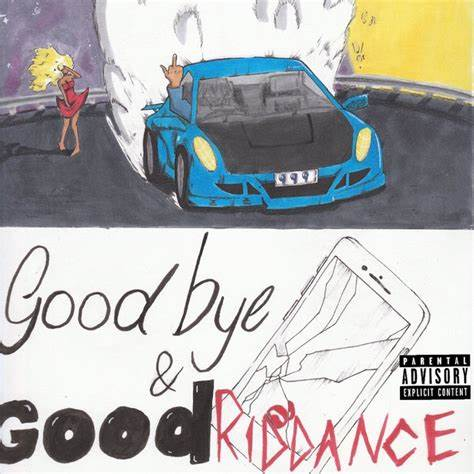
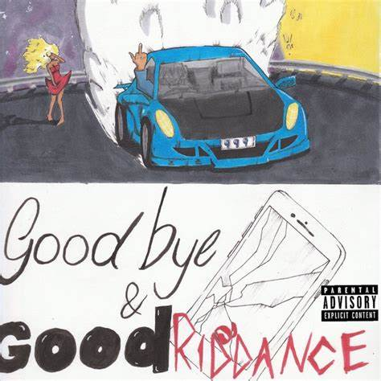
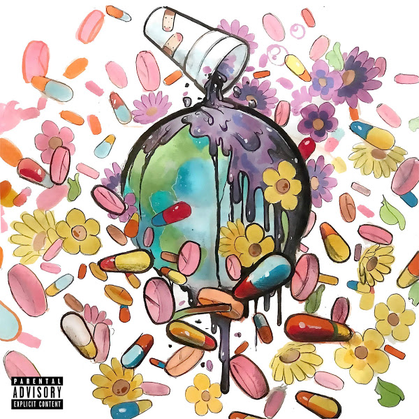
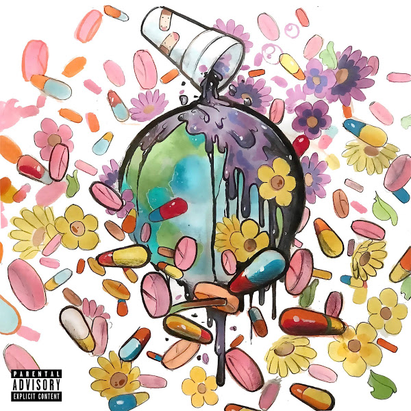

Juice Wrld Day 2023
C'est quoi?
Le 16 Décembre, la communauté de l'artist célèbre la troisième année de la journée où plusieur artistes se rencontre pour parlé de lui. De plus, même mort, de nouvelles chançons de lui continue à être publier. Dans les jours à venir son nouvelle album, The Party Never Ends, devrait apparaitre sur les plateformes de musique.
Lors de l'événement, plusieur artistes qui on fait des chançons avec Juice WRLD ou qui était proche du rappeur, sont venus célébrer l'événement. Les artistes présents sont TBA, A Boogie With Da Hoodie, DD Osama, G Herbo, Lucki, Luh Tyler, Ski Mask the Slump God, Sugarhill DDot, Trippie Redd et des invités spécials
 


 
